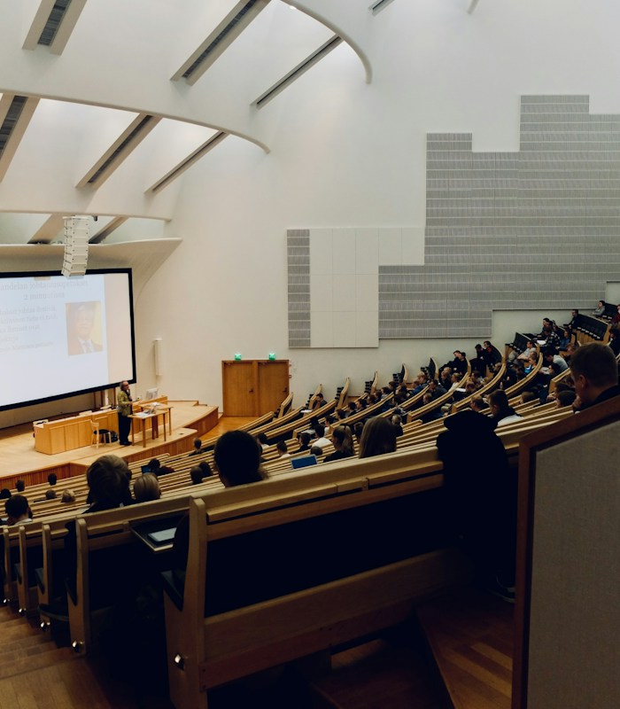

VIDEO TESTIMONIALS
Visit Logic on YouTube →Hear it directly from students.

CMA USA • Placement Story
Student Experience — Shahin Majeed
A student story from Logic School of Management.
▶ Play on YouTubeStudent Testimonials
Learning experiences at Logic
Student perspectives from the Logic community.
▶ Watch videoStudent Testimonials
Learning experiences at Logic
Student perspectives from the Logic community.
▶ Watch videoMORE STORIES
Explore the Logic YouTube channel
Open the official channel for more student stories, webinars and course videos.
↗ Open YouTubeCMS READY
Add your next YouTube testimonial in minutes.
Duplicate a video card in the visual Page Editor, replace the thumbnail, student text and YouTube URL, then save. Standard YouTube watch and youtu.be links automatically open in the video player.